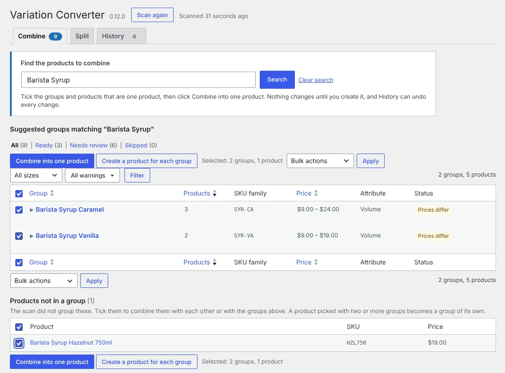
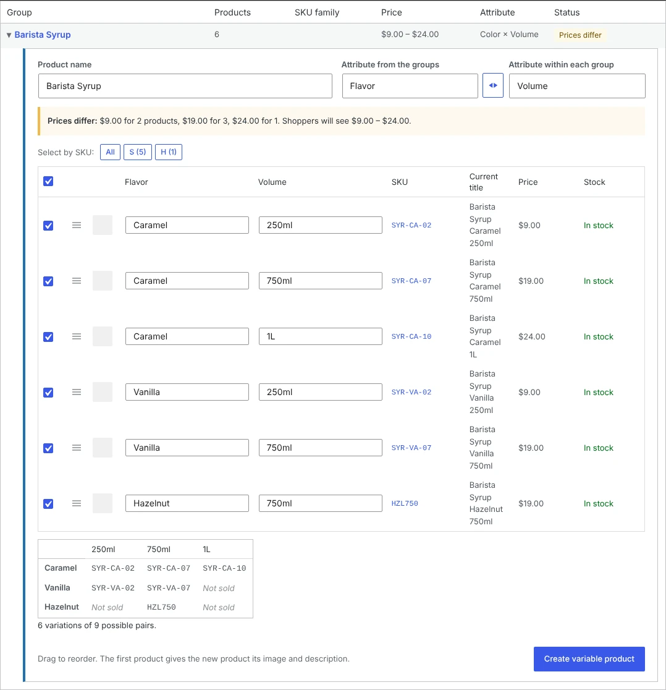
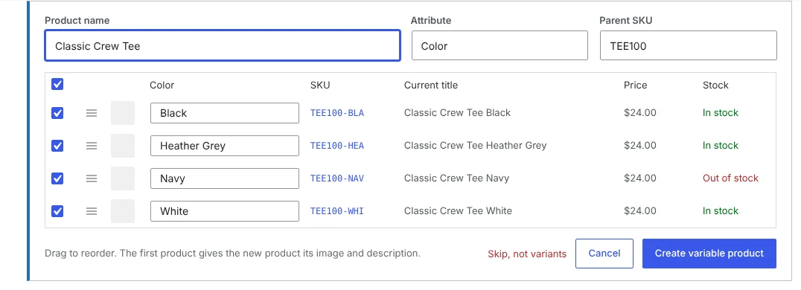
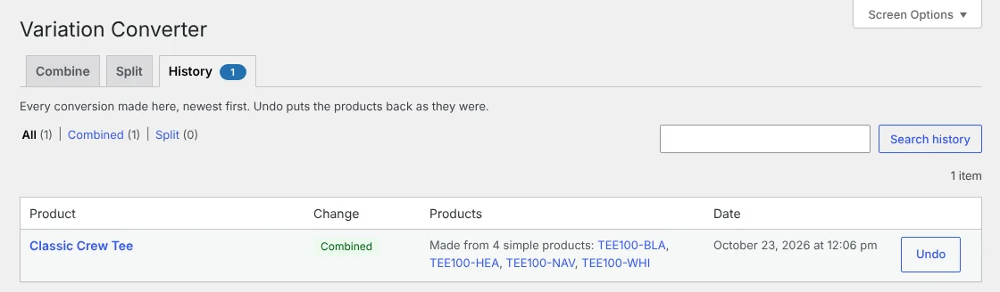
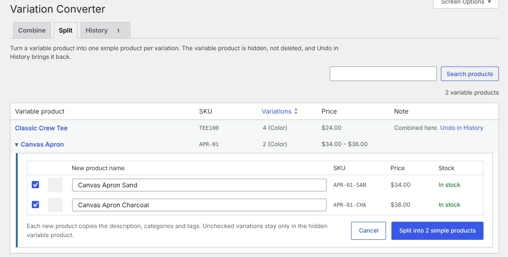

Free WordPress plugin for WooCommerce
Turn a pile of near-duplicate products into one variable product.
Search for a product, tick the groups and products that are really one product in several colors, sizes or scents, and click Combine into one product. Variation Converter has already grouped most of them for you. It splits variable products back into simple ones too. You preview every change, and Undo puts everything back.

Three listings where there should be one
Lots of stores start out with one simple product per variant: "Classic Tee Black", "Classic Tee Blue", "Classic Tee Red". Supplier feeds and platform imports do it too. Shoppers see three listings, and you have three products to keep in sync.
Fixing that by hand means building a variable product, re-entering every SKU, price, stock level and image, and then hiding the old products. Variation Converter does it for you, and keeps the originals so nothing is lost.
How it works
-
Search for the product
Go to Products > Variation Converter and type a name or SKU in Find the products to combine. You see the groups the plugin has already found for it, grouped by SKU family (TEE100-BLK, TEE100-NAV) and shared name, and below them any matching products it didn't group. Each group shows a guessed attribute and notes on anything worth a second look: different prices, different categories, duplicate labels.
-
Tick what belongs together
Tick the groups and products that are one product and click Combine into one product. Products, or one group plus a few strays, make a product with one attribute, such as Color. Two or more groups make a product with two attributes, such as Flavor and Size, with a grid of the pairs you actually sell.

You review and adjust
Check each product, the variant label read from its name, its SKU, price and stock. Rename the product, change the attribute, fix labels, drag to reorder, or untick anything that doesn't belong. Nothing changes until you click Create.

One click makes the variable product
Each original becomes a variation with its SKU, regular and sale price, sale dates, stock, weight, dimensions and image. The new product takes the first member's description, categories, tags, tax and shipping class, with every member's image in its gallery. The originals are hidden from your shop, not deleted, and their old URLs redirect to the new product with the right option selected.
Undo is always there
The History tab lists every conversion with an Undo button. Undo removes what the plugin made and brings the originals back with the visibility they had, carrying over current prices and stock so sales made in between aren't lost.

It works the other way too
If a variable product would sell better as separate listings, or you're moving to a setup that needs one product per variant, split it. Pick a variable product on the Split tab, or use the Split into simple products link in your product list. You get one row per variation with a suggested name you can edit.
Each checked variation becomes a simple product with its own SKU, prices, stock, weight, dimensions and image, plus the parent's descriptions, categories and tags. The variable product is hidden, not deleted, and Undo brings it back.

What you get
Both directions
Merge simple products into a variable product, or split a variable product into simple products.
Search first
Type a product name and see every group and stray product that matches, ready to tick and combine.
Suggests the groups for you
Grouped by SKU family and shared name, sorted and filterable, with Ready, Needs review and Skipped views.
One or two attributes
Combine products into one attribute, such as Color, or whole groups into two, such as Flavor and Size.
Review before anything changes
Rename, change the attribute, fix labels and leave products out. Skip a group that isn't really variants.
Keeps your data
SKUs, prices, sale dates, stock, weight, dimensions and images move to the variations.
Non-destructive
Originals are hidden, never deleted. Their orders, reviews and links stay as they were.
Old links keep working
A combined product's old URL sends a 301 to the variable product with that option chosen.
One-click Undo
Every conversion can be reversed from History, in either direction.
All or nothing
If WooCommerce fails to save any part of a new product, the partial product is removed.
Bulk when you're ready
Tick many groups and click Create a product for each group, or select products in All Products and choose "Combine into variable product".
Lightweight
No settings page, no scripts or styles on your storefront, no external services, nothing stored beyond a few options and product meta fields.
For developers: WP-CLI
Cleaning up a client's catalog? Preview with --dry-run, leave out groups with warnings, and undo from the command line too. Undo works the same as the admin page, in both directions.
# See what would be created
wp varconv combine --all --dry-run
# Create groups of 3+ with matching prices and categories
wp varconv combine --all --min-size=3 --skip=price,cats
# Undo one conversion, or all of them
wp varconv undo 1234
wp varconv undo --all --yesQuestions
Will this delete my products?
No. The original simple products are set to hidden catalog visibility so they no longer show in your shop or search results. They are not deleted, and Undo makes them visible again.
What happens to existing orders, reviews and links?
They stay with the original simple products. Past orders still point to them, and old product URLs redirect to the new variable product with that option selected. Reviews are not copied to the new variable product.
My products don't have SKUs. Will it work?
Not yet. Grouping relies on SKUs, so products without one are never proposed. Name-only matching is being considered for a future version.
Can a product have more than one attribute, like color and size?
Yes, two. Each group the scan finds gets one attribute, such as Size. When several groups are flavors or colors of the same product, search for it, tick the groups and any matching products not in a group, and click Combine into one product. You get one variable product with two attributes, such as Flavor and Size, and a grid shows which pairs are sold.
Why are there two products with the same SKU after a conversion?
The originals are kept, hidden, so Undo can restore everything exactly. Once you're sure you'll keep the new product, you can delete the hidden one yourself.
What if I undo after customers have ordered the new product?
Orders keep their line items and totals, but those lines will no longer link to a product. If the new product has already sold, it's usually better to keep it.
Who can use it?
Anyone with a role that can manage WooCommerce products: Shop Manager or Administrator. We recommend a database backup before converting many products at once.
Get Variation Converter
It's free and open source. In your WordPress admin, go to Plugins > Add New and search for "Variation Converter", or get it from WordPress.org.